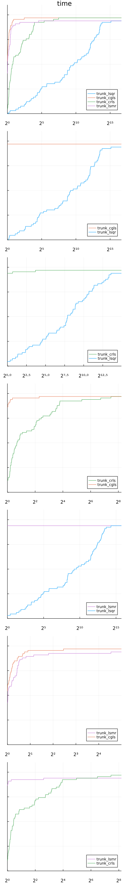

by Tangi Migot


This tutorial showcases some advanced features of solvers in JSOSolvers.
using JSOSolvers
We benchmark different subsolvers used in the solvers TRUNK for unconstrained nonlinear least squares problems. The first step is to select a set of problems that are nonlinear least squares.
using ADNLPModels
using OptimizationProblems
using OptimizationProblems.ADNLPProblems
df = OptimizationProblems.meta
names = df[(df.objtype .== :least_squares) .& (df.contype .== :unconstrained), :name]
ad_problems = (eval(Meta.parse(problem))(use_nls = true) for problem ∈ names)
Base.Generator{Vector{String}, Main.var"##WeaveSandBox#292".var"#1#2"}(Main.var"##WeaveSandBox#292".var"#1#2"(), ["arglina", "arglinb", "bard", "bdqrtic", "beale", "bennett5", "boxbod", "brownal", "br
ownbs", "brownden" … "power", "rat42", "rat43", "rozman1", "sbrybnd", "spmsrtls", "thurber", "tquartic", "vibrbeam", "watson"])
These problems are ADNLSModel so derivatives are generated using automatic differentiation.
nls = first(ad_problems)
typeof(nls)
ADNLPModels.ADNLSModel{Float64, Vector{Float64}, Vector{Int64}}
The solvers TRON and TRUNK are trust-region based methods that compute a search direction by means of solving iteratively a linear least squares problem. For this task, several solvers are available.
JSOSolvers.trunkls_allowed_subsolvers
4-element Vector{UnionAll}:
Krylov.CglsSolver
Krylov.CrlsSolver
Krylov.LsqrSolver
Krylov.LsmrSolver
This benchmark could also be followed for the solver TRON where the following subsolver are available.
JSOSolvers.tronls_allowed_subsolvers
4-element Vector{UnionAll}:
Krylov.CglsSolver
Krylov.CrlsSolver
Krylov.LsqrSolver
Krylov.LsmrSolver
These linear least squares solvers are implemented in the package Krylov.jl.
using Krylov
We define a dictionary of the different solvers that will be benchmarked. We consider here four variants of TRUNK using the different subsolvers.
solvers = Dict(
:trunk_cgls => model -> trunk(model, subsolver_type = CglsSolver),
:trunk_crls => model -> trunk(model, subsolver_type = CrlsSolver),
:trunk_lsqr => model -> trunk(model, subsolver_type = LsqrSolver),
:trunk_lsmr => model -> trunk(model, subsolver_type = LsmrSolver)
)
Dict{Symbol, Function} with 4 entries:
:trunk_lsqr => #5
:trunk_cgls => #3
:trunk_crls => #4
:trunk_lsmr => #6
Using SolverBenchmark.jl functionalities, the solvers are executed over all the test problems.
using SolverBenchmark
stats = bmark_solvers(solvers, ad_problems)
Dict{Symbol, DataFrames.DataFrame} with 4 entries:
:trunk_lsqr => 66×39 DataFrame…
:trunk_cgls => 66×39 DataFrame…
:trunk_crls => 66×39 DataFrame…
:trunk_lsmr => 66×39 DataFrame…
The result is stored in a dictionary of DataFrame that can be used to analyze the results.
first_order(df) = df.status .== :first_order
unbounded(df) = df.status .== :unbounded
solved(df) = first_order(df) .| unbounded(df)
costnames = ["time"]
costs = [df -> .!solved(df) .* Inf .+ df.elapsed_time]
1-element Vector{Main.var"##WeaveSandBox#292".var"#11#12"}:
#11 (generic function with 1 method)
We compare the four variants based on their execution time. More advanced comparisons could include the number of evaluations of the objective, gradient, or Hessian-vector products.
using Plots
gr()
profile_solvers(stats, costs, costnames)

The CRLS and CGLS variants are the ones solving more problems, and even though the difference is rather small the CGLS variant is consistently faster which seems to indicate that it is the most appropriate subsolver for TRUNK. The size of the problems were rather small here, so this should be confirmed on larger instance. Moreover, the results may vary depending on the origin of the test problems.